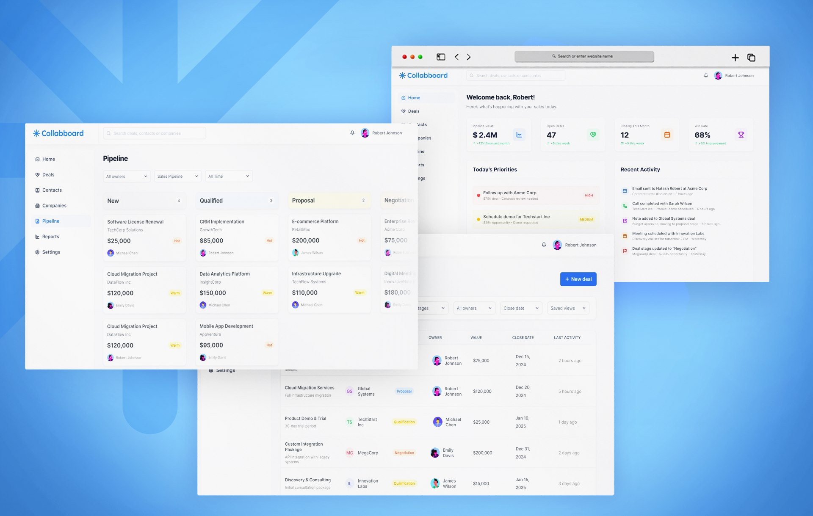

Um pipeline onde estágio e urgência não são o mesmo sinal
Collabboard é um workspace de CRM B2B conceitual construído em torno da tomada de decisão diária de vendas. A maioria dos quadros de pipeline rastreia uma única coisa — em que estágio um negócio está — e espera que a urgência viva na cabeça de alguém. Collabboard transforma a urgência em um sinal explícito e separado, e renderiza o mesmo pipeline de três formas diferentes dependendo do que a pessoa que está olhando precisa fazer.
2
sinais por negócio · estágio e temperatura rastreados independentemente, então a urgência nunca se esconde dentro de um rótulo de estágio
3
visões de um pipeline · quadro para fluxo, tabela para revisão, página de detalhe para contexto — mesmos dados, função diferente
1
página para resumir um negócio · linha do tempo, pessoas e resumo juntos, sem precisar de uma reunião separada para se atualizar

Pipeline de CRM padrão · o padrão que isso resolve
Estágio responde onde um negócio está no processo. Não diz nada sobre se ele está avançando. Um negócio pode parecer saudável pelo estágio e estar morto pelo momentum — até que alguém checke manualmente cada card.
O problema
A maioria dos pipelines de CRM colapsa duas perguntas diferentes em um único sinal. O estágio responde "onde esse negócio está no processo". Não diz nada sobre "esse negócio precisa de atenção agora". Quando a interface só rastreia estágio, a urgência precisa viver na memória de um rep — o que funciona para alguns poucos negócios e quebra a partir daí.
Um negócio parado em Negociação por nove semanas e um negócio que acabou de chegar renderizam de forma idêntica se o estágio é a única coisa que o quadro mostra.
Collabboard mantém o estágio como eixo estrutural — ele ainda decide em qual coluna um card fica — mas adiciona a temperatura como um segundo sinal, independente, que um rep define e o quadro exibe sem que isso mude a posição do negócio. Onde e quão urgente deixam de ser a mesma pergunta.
Estágio e temperatura, desacoplados
Todo card no quadro de pipeline carrega um chip Hot, Warm ou Cold ao lado de sua coluna de estágio. Um negócio em Proposta pode estar Hot porque o comprador acabou de pedir uma revisão de contrato, ou Cold porque o setor de compras ficou quieto por três semanas. Mesmo estágio, urgências opostas — e agora o quadro mostra a diferença em vez de escondê-la.
Só estágio
O quadro agrupa negócios por onde estão. Um rep escaneando colunas vê processo, não prioridade. Encontrar o que precisa de atenção hoje significa abrir cards um por um.
Estágio + temperatura
A coluna diz onde. O chip diz quão urgente. Um rep pode escanear por chips Hot em todas as colunas de uma vez, independente de em qual estágio esses negócios estejam.

Um pipeline, três visões
O mesmo conjunto de negócios renderiza de três formas, e nenhuma delas é a visão "real". O quadro mostra fluxo — cards se movendo entre estágios, bom para um rep trabalhando o pipeline dia a dia. A tabela mostra tudo ordenável e filtrável por negócio, empresa, responsável, valor e data de fechamento — o que um gestor precisa para uma revisão de forecast com os 47 negócios abertos de uma vez.
Quadro
Espacial, agrupado por estágio, feito para escanear e mover cards. Responde "o que está acontecendo no pipeline agora".
Tabela
Densa, ordenável, filtrável por qualquer coluna. Responde "quais negócios atendem a esse critério específico" — a pergunta que uma revisão de forecast de fato faz.
Forçar a revisão de um gestor dentro do quadro, ou o trabalho diário de um rep dentro da tabela, ambos tecnicamente funcionam e ambos lutam contra a tarefa. Os dados são idênticos; só a forma muda com o trabalho.

Início como resumo diário
A visão Início inverte deliberadamente o eixo do quadro. Onde o pipeline agrupa por estágio, "Prioridades de hoje" agrupa por ação necessária — um follow-up de alta prioridade, uma demo para agendar, uma proposta vencendo hoje — independente de qual estágio cada um pertence. Um rep abre uma lista em vez de escanear toda coluna procurando o que está pegando fogo.
Quatro cards de KPI ficam acima, do mesmo tamanho: Valor do Pipeline, Negócios Abertos, Fechando Este Mês, Taxa de Vitória. Essa é uma decisão diferente de dar a liderança para uma métrica, e é deliberada aqui, não inconsistente — esses quatro números respondem quatro perguntas diferentes para momentos diferentes do dia, não quatro reivindicações competindo pela mesma decisão. Peso igual é correto quando nada deveria superar os outros; hierarquia é para quando um sinal deveria guiar a próxima ação, o que nenhum desses quatro faz isoladamente.

A página que substitui uma reunião
Abrir um único negócio traz a linha do tempo de atividade, um resumo do negócio (probabilidade, origem, data de criação, última atividade) e as pessoas envolvidas em um único layout. Qualquer pessoa — um gestor cobrindo um rep de férias, um rep assumindo um negócio no meio do ciclo — consegue ler o estado completo de um negócio sem uma ligação de transição.
A linha do tempo lê como um registro, não como um feed: ligações, propostas enviadas, e-mails, demos e mudanças de estágio em uma única linha cronológica. Misturar tipos de atividade em um único fluxo, em vez de separá-los em abas diferentes, mantém a sequência do que realmente aconteceu intacta.

Reflexões
Os quatro KPIs iguais da visão Início parecem contradizer o princípio "escolha uma métrica" do BrightFlow — não contradizem, mas eu deveria deixar isso explícito mais cedo. Hierarquia é para quando um número deveria guiar a próxima ação. Peso igual é para quando vários números respondem perguntas genuinamente diferentes para papéis diferentes. Os dois são princípios reais; o modo de falha é aplicar um onde o outro é necessário, não escolher o "errado" isoladamente.
A temperatura só funciona se os reps realmente a mantiverem atualizada. Um sinal definido manualmente é mais honesto que um automático, mas herda o mesmo risco que todo campo manual de CRM tem: ele decai até ser ignorado algumas semanas após o lançamento. Eu gostaria de um empurrão leve — mostrar a temperatura junto do registro de atividade, para que atualizá-la pareça parte de registrar uma ligação em vez de uma tarefa separada.
A transição entre as três visões ainda não foi desenhada. Clicar em um card abre a página de detalhe, mas um filtro aplicado na tabela persiste se o rep mudar para o quadro? Eu não desenhei essa continuidade, e em um produto real é exatamente esse tipo de costura que faz múltiplas visões parecerem múltiplas ferramentas em vez de um único workspace.
Vamos conversar
Tem um projeto?
Vamos fazer acontecer.